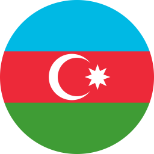

<!DOCTYPE html>
<html lang="en">
<head>
    <meta charset="UTF-8">
    <meta http-equiv="X-UA-Compatible" content="IE=edge">
    <meta name="viewport" content="width=device-width, initial-scale=1.0">
    <title>Document</title>
</head>
<body>
    
</body>
</html>
<!DOCTYPE html>
<html lang="en">
<head>
    <meta charset="UTF-8">
    <meta http-equiv="X-UA-Compatible" content="IE=edge">
    <meta name="viewport" content="width=device-width, initial-scale=1.0">
    <title>AMGK</title>
    <link href="https://cdn.jsdelivr.net/npm/bootstrap@5.3.0-alpha1/dist/css/bootstrap.min.css" rel="stylesheet" integrity="sha384-GLhlTQ8iRABdZLl6O3oVMWSktQOp6b7In1Zl3/Jr59b6EGGoI1aFkw7cmDA6j6gD" crossorigin="anonymous">
    <link rel="icon" href="style/icony.png"/>
    <link rel="stylesheet" href="style/style.css">
    <link rel="stylesheet" href="style/style2.css">
    <link href='https://unpkg.com/boxicons@2.1.4/css/boxicons.min.css' rel='stylesheet'>
    <link href="https://fonts.googleapis.com/css2?family=Inter&display=swap" rel="stylesheet">
    <style>
      .hdi {
        color: black;
        text-transform: lowercase;
        transition: 0.3s;
      }
      .hdi:hover {
        color: #ff8d1e;
        transition: 0.3s;
      }
      .program {
        color: black;
        text-align: center;
      }
    </style>

</head>
<body>
  <nav class="navbar bg-dark navbar-dark navbar-expand-sm fixed-top" >
    <div class="container-fluid">
        <a  class="navbar-brand"><span>AMGK.</span><span style="color: #ff8d1e;">AZ</span></a>

        <button class="navbar-toggler" type="button" data-bs-toggle="collapse" data-bs-target="#nav">
            <span class="navbar-toggler-icon"></span>
        </button>
        <div class="collapse navbar-collapse" id="nav">
            <ul class="navbar-nav">
                <li class="nav-item"><a href="index.html" class="nav-link">Haqqımızda</a></li>
                <li class="nav-item"><a href="index.html" class="nav-link">Konfrans</a></li>
                <li class="nav-item"><a href="index.html" class="nav-link">Jurnal</a></li>
                <li class="nav-item"><a href="index.html" class="nav-link">Xəbərlər</a></li>
                <li class="nav-item"><a href="index.html" class="nav-link">Üzvlər</a></li>
                <li class="nav-item"><a href="index.html" class="nav-link">Əlaqə</a></li>
            </ul>
            <a href="#" class="ms-auto pe-4 azerbaycaneng">
              <span class="pe-2">EN</span>
              
            </a>
        </div>
    </div>
  </nav>
  <section id="haqqimizda" style="width: 95%;" class="mx-auto">
    <div class=" mx-auto haqqimizda" >
      <h5 class="display-4 fw-bold text-center mb-3" style="color: #ff8d1e;">X Azərbaycan Beynəlxalq Geofizika konfransı 

      </h5>
      <div id="carouselExampleCaptions" class="carousel slide">
        <div class="carousel-indicators">
          <button type="button" data-bs-target="#carouselExampleCaptions" data-bs-slide-to="0" class="active" aria-current="true" aria-label="Slide 1"></button>
          <button type="button" data-bs-target="#carouselExampleCaptions" data-bs-slide-to="1" aria-label="Slide 2"></button>
          <button type="button" data-bs-target="#carouselExampleCaptions" data-bs-slide-to="2" aria-label="Slide 3"></button>
        </div>
        <p>
            1-3 noyabr 2017-ci il tarixində Bakıda gözəl bir məkanda X Azərbaycan Beynəlxalq Geofizika konfransı keçirilmişdir. Artıq ənənə şəklini almış bu tədbirin keçirilməsində Azərbaycan Milli Geofizika Komitəsi İB, SOCAR-ın Geofizika və Geologiya İdarəsi, ABŞ-ın Kəşfiyyatçı Geofiziklər Cəmiyyəti (SEG), ABŞ-ın Neft Mühəndisləri cəmiyyəti (SPE), Respublikanın müvafiq geofiziki və geoloji qurumları, nüfuzlu beynəlxalq neft və geofiziki təşkilatları aktiv iştirak etmişdir. 
            Konfransı giriş sözü ilə təşkilat komitəsinin sədri, GGİ-nin rəisi Elçin Şirinov açaraq nümayəndələri salamlamış, tədbir iştirakçılarına xoş ovqat və müvəffəqiyyətlər arzu etmişdir.
            Azərbaycan Milli Geofizika Komitəsi İB-nin sədri Şahvələd Köçərli də konfrans iştirakçılarını salamlamış, bəzi prosedur qaydaların gerçəkləşməsi təfərrüatlarından danışmışdır. 
            
           </p>
           <p>
            Konfransın iclasları 4 seksiya çərçivəsində keçirilmişdir: <b> GEOLOJİ VƏ GEOFİZİKİ TƏDQİQATLARIN İSTİQAMƏTLƏRİ, KƏŞFİYYAT GEOFİZİKASI SAHƏSİNDƏ TƏDQİQATLAR, MƏDƏN GEOFİZİKASI SAHƏSİNDƏ TƏDQİQATLAR, SEYSMOLOGİYA, GEODİNAMİKA VƏ EKOLOJİ SAHƏDƏ TƏDQİQATLAR.</b> Şifahi sessiyada oxunmuş məruzələrin sayı 33, stend sessiyasındakı təqdimatlar isə 17 məruzə təşkil etmişdir.

           </p>
           <p> 
            Qeyd edilməlidir ki, istər Azərbaycan, istərsə də beynəlxalq təşkilat və şirkətlərin nümayəndələri olduqca maraqlı məruzələrlə çıxış etmiş, dəyərli tövsiyyələr vermişlər. 
            </p>
        
     <br>
      <p>Azərbaycandan olan məruzəçilərdən Pərviz Məmmədovun, Əkbər Feyzulayevin, Lalə Əbilhəsənovanın, Elxan İsgəndərovun, Əli Novruzov, Vaqif Qədirov və E.Ələskərovun, Çingiz Əliyevin, Qurban Yetirmişli və Hümbət Vəliyevin və s. məruzələri, xarici və əməliyyat şirkətlərindən A.Nikitin və E.Krasinskinin, A.Kukun, B.Tezkanın, Ş.Hənafinin, N.Abdullayev, G.Rayli və A.Cavadovanın, A.Qasımovun, A.Mennanın və b. məruzələri xüsusilə fərqlənmişdir.

        </p> 
        <p>
            Əvvəlki konfranslarla müqayisədə bu tədbirdə gənclərin, xüsusilə BP şirkətində çalışan gənclərin fəal iştirakını qeyd etmək lazımdır. 
            Konfransın fasilələrində və tədbirin sonunda fikir mübadilələri keçirilmiş, geofizika və geologiyanın gələcək inkişaf perspektivləri barədə tövsiyyələr verilmişdir. 
            Konfrans işini yekunlaşdırandan sonra, GGİ-nin akt salonunda SEG tərəfindən ilin ən yaxşıməruzəçisi sayılan Ş.Hənafinin tələbələr üçün məruzəsi dinlənilmişdir.
            XI Azərbaycan Beynəlxalq Geofizika Konfransının 2019-cu ilin noyabr ayında keçirilməsi qərara alınmışdır. 
        </p>
    </section>


  <footer class="text-white bg-dark py-3 w-100" id="contact">
    <div class="footertop w-100 mb-3">
      <div class="container-fluid">
        <div class="row">
          <div class="col-4">
            <h1 class="pt-3 amgkyazifooter" style="color: #ff8d1e;">AMGK</h1>
            <p> Marketing Suite.Contact Us. Azərbaycan Milli Geofizika Komitəsi <br> Ünvan: Bakı, Heydər Əliyev prospekti 83 A Geofizika və geologiya İdarəsi, mərtəbə 5 </p>
          </div>
          <div class="col-4 ms-auto">
            <h6 class="my-4" style="color: #ff8d1e;">CONTACT</h6>
            <p>Telefon: 994 12 521 04 25 / 521 04 21</p>
            <p>Faks: 994 12 514 12 71</p>
            <p>Elektron poçt: office@amgk.az</p>
          </div>
          <div class="col-4 ms-auto">
            <h6 class="my-4" style="color: #ff8d1e;">AMGK.AZ</h6>
            <p>Azərbaycan Milli Geofizika Komitəsi</p>
          </div>
        </div>
      </div>
    </div>
  </footer>
<script src="https://cdn.jsdelivr.net/npm/bootstrap@5.3.0-alpha1/dist/js/bootstrap.bundle.min.js" integrity="sha384-w76AqPfDkMBDXo30jS1Sgez6pr3x5MlQ1ZAGC+nuZB+EYdgRZgiwxhTBTkF7CXvN" crossorigin="anonymous"></script>
</body>
</html>
